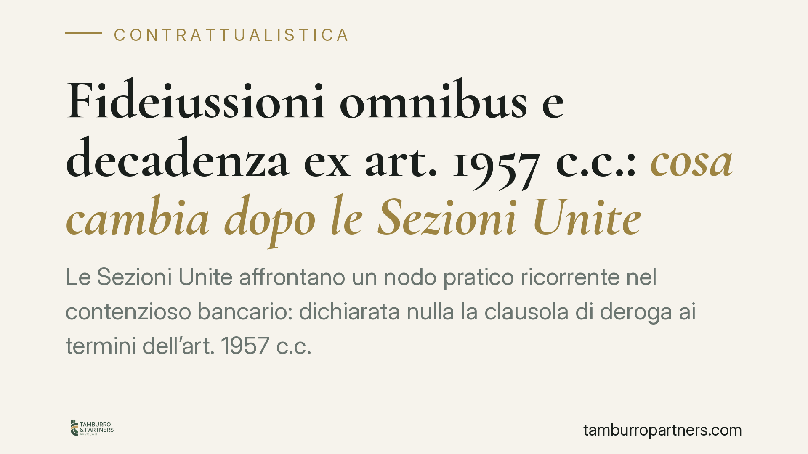

Fideiussioni omnibus e decadenza ex art. 1957 c.c.: cosa cambia dopo le Sezioni Unite
Le Sezioni Unite affrontano un nodo pratico ricorrente nel contenzioso bancario: dichiarata nulla la clausola di deroga ai termini dell'art. 1957 c.c. nelle fideiussioni su Schema ABI, basta un'istanza stragiudiziale di pagamento a impedire la decadenza del creditore? La risposta incide direttamente sulla sopravvivenza della garanzia e sulle strategie difensive del fideiussore.

Il contesto
La fideiussione è la garanzia con cui un terzo (il fideiussore) si obbliga verso il creditore per il debito altrui. Quando la garanzia è "omnibus", copre tutte le obbligazioni presenti e future del debitore principale verso la banca.
Molti di questi contratti riproducono lo Schema ABI del 2003, che l'Autorità Garante della Concorrenza ha ritenuto frutto di un'intesa restrittiva. La giurisprudenza ne ha dichiarato la nullità limitata alle clausole anticoncorrenziali, tra cui quella che deroga ai termini dell'art. 1957 c.c.
Caduta quella clausola di deroga, la disciplina legale torna ad applicarsi. Da qui la questione risolta dalle Sezioni Unite.
Inquadramento normativo
L'art. 1957 c.c. stabilisce che il fideiussore resta obbligato anche dopo la scadenza dell'obbligazione principale solo se il creditore, entro sei mesi, ha "proposto le sue istanze" contro il debitore e le ha continuate con diligenza. Il termine è di due mesi quando il fideiussore ha limitato la garanzia allo stesso termine del debitore.
Si tratta di un termine di decadenza: se il creditore non agisce nei tempi, la garanzia si estingue. Il punto controverso è cosa si intenda per "istanze". La formula è ampia e ha alimentato due letture:
- una rigorosa, secondo cui occorre un'azione giudiziale (o comunque un atto idoneo a incidere sul rapporto processuale);
- una estensiva, che valorizza anche atti stragiudiziali, come la costituzione in mora o l'intimazione di pagamento.
Le fideiussioni su Schema ABI derogavano proprio a questa disciplina, sterilizzando la decadenza. Con la nullità della clausola, il creditore si ritrova soggetto al termine di legge e deve dimostrare di averlo rispettato.
La questione rimessa alle Sezioni Unite
Il quesito è se una semplice istanza stragiudiziale di pagamento — una lettera di messa in mora, una richiesta formale — sia idonea a impedire la decadenza ex art. 1957 c.c., oppure se sia necessario un atto di natura giudiziale.
La distinzione non è teorica. Nel contenzioso bancario, la banca creditrice spesso interviene con solleciti e diffide prima di attivare il recupero coattivo. Se questi atti valgono a conservare la garanzia, la posizione del fideiussore si indebolisce; se non valgono, la decadenza può liberarlo integralmente.
Le Sezioni Unite intervengono per superare il contrasto e fissare un criterio uniforme, con effetti su un numero elevato di giudizi pendenti in cui il fideiussore eccepisce la nullità della clausola ABI per riportare in vita il termine di legge.
Implicazioni pratiche
Per il fideiussore la partita si gioca su due fronti. Primo: far dichiarare la nullità della clausola di deroga, così da reintrodurre il termine dell'art. 1957 c.c. Secondo: verificare se il creditore ha rispettato quel termine e con quali atti.
Se prevale l'orientamento rigoroso, il fideiussore potrà eccepire la decadenza ogni volta che la banca si sia limitata a solleciti scritti senza attivare un'azione giudiziale nei termini. Se prevale quello estensivo, l'onere probatorio del fideiussore diventa più gravoso.
Per la banca creditrice la lezione è di metodo: non dare per scontato che la messa in mora basti a conservare la garanzia. La gestione documentale delle scadenze e la tempestività dell'azione diventano decisive.
Cosa fare in concreto
- Recuperate il testo integrale del contratto di fideiussione e verificate se riproduce lo Schema ABI 2003, in particolare la clausola di deroga all'art. 1957 c.c.
- Ricostruite la cronologia della scadenza dell'obbligazione principale e degli atti compiuti dal creditore, con date certe.
- Individuate la natura di ciascun atto (sollecito, diffida, decreto ingiuntivo, precetto) per valutare se sia idoneo secondo l'orientamento applicabile.
- Valutate tempestivamente l'eccezione di decadenza: è un'eccezione che va sollevata nei tempi processuali corretti, pena la sua inammissibilità.
- Consigliamo di non affidarsi a valutazioni sommarie: l'esito dipende dalla combinazione tra nullità della clausola, decorrenza dei termini e qualificazione degli atti del creditore.
Conclusione
La pronuncia delle Sezioni Unite offre un punto fermo su una questione che ha diviso i giudici di merito e alimentato incertezza. Chi ha prestato una fideiussione su modello ABI, come chi vanta un credito garantito, ha interesse a rileggere la propria posizione alla luce del principio affermato.
Disclaimer
Contributo informativo a cura di Tamburro & Partners - Avv. Giuseppe Tamburro. Non costituisce parere legale.
Ogni contratto ha il suo equilibrio.
Se vuoi una revisione delle clausole o una redazione su misura, scrivi allo studio. Ti rispondiamo entro un giorno lavorativo.